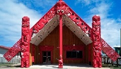

Māori culture is the culture of the Māori of New Zealand (an Eastern Polynesian people) and forms a distinctive part of New Zealand culture. Māori cultural history is inextricably tied into the culture of Polynesia as a whole. Aotearoa (New Zealand) is the southwestern corner of the Polynesian Triangle, a region of the Pacific Ocean with three island groups at its corners: the Hawaiʻi islands, Rapa Nui (Easter Island), and New Zealand (Aotearoa in Māori).

Marae - Māori meeting ground
In Māori society, the marae is a place where the culture can be celebrated, the the Māori language can be spoken, intertribal obligations can be met, customs can be explored and debated, family occasions such as birthdays can be held, and important ceremonies, such as welcoming visitors or farewelling the dead (tangihanga), can be performed. The marae is a wāhi tapu, a 'sacred place' which carries great cultural meaning.
Haka - Māori war dance
A traditional war cry, war dance, or challenge in Māori culture. It is a posture dance performed by a group, with vigorous movements and stamping of the feet with rhythmically shouted accompaniment. New Zealand sports teams' practice of performing a haka before their international matches has made the haka more widely known around the world.
Māori Art
Māori visual art consists primarily of four forms: carving, tattooing (ta moko), weaving, and painting. It was rare for any of these to be purely decorative; traditional Māori art was highly spiritual and in a pre-literate society conveyed information about spiritual matters, ancestry, and other culturally important topics.
Languages
English is the de facto official and predominant language of New Zealand. Almost the entire population speak it either as native speakers or proficiently as a second language. The New Zealand English dialect is most similar to Australian English in pronunciation, with some key differences.
The Māori language (te reo Māori) of the indigenous Māori people was made the first de jure official language in 1987.
New Zealand Sign Language (NZSL) has also been officially recognised since 2006. Many other languages are used by New Zealand's minority ethnic communities.
Some Common Maori Words
Maori
English Meaning
Aotearoa
New Zealand (literally - long white cloud)
Hangi
Traditional feast prepared in earth oven
Haka
War dance with actions
Kai
Food
Kauri
Large native conifer
Kea
Native parrot
Kia ora
Hello; greetings
Kiwi
Native flightless bird; fruit
Maori
Indigenous inhabitants of New Zealand; the language of the indigenous inhabitants of New Zealand
Pakeha
New Zealander of non-Maori descent, usually European